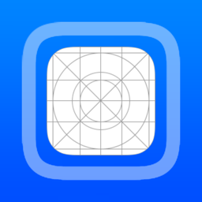
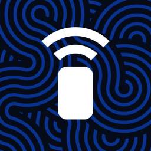
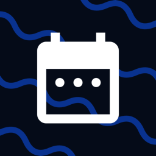

SideStore
An app store for sideloaded apps. It installs them and keeps them refreshed, all on the device.
SideInstaller sets up SideStore, LiveContainer, AltStore or Madeira on your iPhone or iPad. The pairing, signing and installing that used to need a Mac or PC happen on the device.
SideInstaller downloads the app from the project that makes it, signs it with your Apple ID and installs it.
An app store for sideloaded apps. It installs them and keeps them refreshed, all on the device.

Runs your apps inside one container, so they don't count toward a free Apple ID's three-app limit. SideStore is built in.
AltStore Classic, with the pairing file already in place for its Remote AltServer.
Runs Windows PC games on iPhone and iPad.
Any .ipa of your own, picked from Files or pasted as a link.
No cable and no desktop tool. What a computer used to do is a few taps in the app.
It's used on the device, only to sign and install your apps. Nothing is logged or collected, because there's no SideInstaller server to send it to. No analytics, and no account to make. And the code is public, so anyone can check.
Only install it from here. SideInstaller is published on sideinstaller.net and in its GitHub repository, and nowhere else. The code is open, so anyone can rebuild it with a change that steals the Apple ID typed into it. A copy from any other site, sideinstaller.com included, isn't safe to sign in to.
Read the sourceThe app's Tools tab holds the jobs that come up once you sideload.

Set up someone else's iPhone from yours
Make a pairing file and pass it to the apps that need one
See your signing certificates, revoke one or export it
Ask Apple to turn on capabilities for an App ID
Set a location, save places and drive GPX routes

See what's installed and when it expires
From iOS 27 the iPhone can pair with itself, which is what lets SideInstaller work alone. Earlier versions need one file made on a computer first.